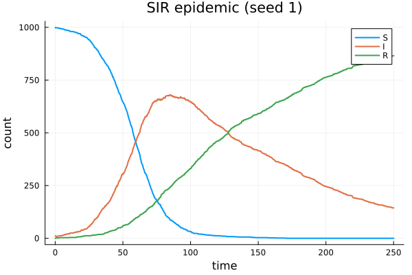
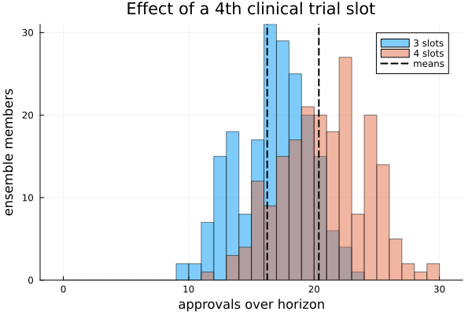

Introductory tutorial — your first ReactiveDynamics model
What you will build. A timed, stochastic R&D pipeline, end to end: author it in the modeling metalanguage, simulate it, read the results by name, and use the model to compute a quantity that informs a concrete decision.
Who this is for. Anyone new to ReactiveDynamics. You need no prior exposure to discrete-event simulation or to the package. We stay entirely in the classical regime — every quantity is a plain counted stock (molecules, dollars, scientists, jobs). Structured/agentic tokens (projects with attributes and lifecycle identity) are the subject of the advanced tutorial; here we learn the bare engine.
The mental model in one paragraph. A model is a set of transitions. Each transition has a rate (how often it tries to fire), a left-hand side of reactants it consumes, and a right-hand side of products it emits. Firing can be instantaneous or take time (a cycletime, during which an in-flight instance may also fail a success draw). All randomness flows through a per-run seeded RNG, so a run is fully determined by the model and its seed. That is the whole engine.
using ReactiveDynamics
using Statistics # mean / std / quantile for the ensemble reductions in §3–§4
using Plots # inline figures1. A first model: the SIR epidemic
We start with the textbook susceptible–infected–recovered epidemic, because it introduces every part of the authoring surface you will reuse for the rest of the tutorial. A model is written with the @reaction_network macro; each line reads rate, LHS --> RHS, name => ….
S + I --> 2I— a susceptible meets an infected and becomes infected (net −1S, +1I). Its rateα*S*Iis a mass-action expression: a bare numeric expression is a stochastic (Poisson) intensity.I --> R— an infected recovers, at rateβ*I.
No individual is created or destroyed outright, so S + I + R is a structural invariant — a built-in sanity check the engine must preserve exactly.
sir = @reaction_network begin
α * S * I, S + I --> 2I, name => infection
β * I, I --> R, name => recovery
endReactiveDynamics.ReactionNetwork(Dict(:T => 2, :P => 0, :M => 0, :obs => 0, :S => 3, :E => 0), (specName = ReactiveDynamics.AttrColumn{Symbol}([:S, :I, :R], Bool[1, 1, 1]), specModality = ReactiveDynamics.AttrColumn{Set{Symbol}}(Set{Symbol}[Set(), Set(), Set()], Bool[1, 1, 1]), specInitVal = ReactiveDynamics.AttrColumn{Union{Float64, Int64, AbstractString, Expr, Function, Symbol}}(Union{Float64, Int64, AbstractString, Expr, Function, Symbol}[0.0, 0.0, 0.0], Bool[1, 1, 1]), specInitUncertainty = ReactiveDynamics.AttrColumn{Union{Float64, Int64, AbstractString, Expr, Function, Symbol}}(Union{Float64, Int64, AbstractString, Expr, Function, Symbol}[0.0, 0.0, 0.0], Bool[1, 1, 1]), specCost = ReactiveDynamics.AttrColumn{Union{Float64, Int64, AbstractString, Expr, Function, Symbol}}(Union{Float64, Int64, AbstractString, Expr, Function, Symbol}[0.0, 0.0, 0.0], Bool[1, 1, 1]), specReward = ReactiveDynamics.AttrColumn{Union{Float64, Int64, AbstractString, Expr, Function, Symbol}}(Union{Float64, Int64, AbstractString, Expr, Function, Symbol}[0.0, 0.0, 0.0], Bool[1, 1, 1]), specValuation = ReactiveDynamics.AttrColumn{Union{Float64, Int64, AbstractString, Expr, Function, Symbol}}(Union{Float64, Int64, AbstractString, Expr, Function, Symbol}[0.0, 0.0, 0.0], Bool[1, 1, 1]), specStructured = ReactiveDynamics.AttrColumn{Bool}(Bool[0, 0, 0], Bool[1, 1, 1]), specRole = ReactiveDynamics.AttrColumn{Symbol}([:private, :private, :private], Bool[1, 1, 1]), trans = ReactiveDynamics.AttrColumn{Union{Float64, Int64, AbstractString, Expr, Function, Symbol}}(Union{Float64, Int64, AbstractString, Expr, Function, Symbol}[:(S + I → 2I), :(I → R)], Bool[1, 1]), transPriority = ReactiveDynamics.AttrColumn{Union{Float64, Int64, AbstractString, Expr, Function, Symbol}}(Union{Float64, Int64, AbstractString, Expr, Function, Symbol}[1, 1], Bool[1, 1]), transRate = ReactiveDynamics.AttrColumn{Union{Float64, Int64, AbstractString, Expr, Function, Symbol}}(Union{Float64, Int64, AbstractString, Expr, Function, Symbol}[:(rand(state.rng, Poisson(max(state.dt * (α * S * I), 0)))), :(rand(state.rng, Poisson(max(state.dt * (β * I), 0))))], Bool[1, 1]), transCycleTime = ReactiveDynamics.AttrColumn{Union{Float64, Int64, AbstractString, Expr, Function, Symbol}}(Union{Float64, Int64, AbstractString, Expr, Function, Symbol}[0.0, 0.0], Bool[1, 1]), transProbOfSuccess = ReactiveDynamics.AttrColumn{Union{Float64, Int64, AbstractString, Expr, Function, Symbol}}(Union{Float64, Int64, AbstractString, Expr, Function, Symbol}[1, 1], Bool[1, 1]), transCapacity = ReactiveDynamics.AttrColumn{Union{Float64, Int64, AbstractString, Expr, Function, Symbol}}(Union{Float64, Int64, AbstractString, Expr, Function, Symbol}[Inf, Inf], Bool[1, 1]), transMaxLifeTime = ReactiveDynamics.AttrColumn{Union{Float64, Int64, AbstractString, Expr, Function, Symbol}}(Union{Float64, Int64, AbstractString, Expr, Function, Symbol}[Inf, Inf], Bool[1, 1]), transPreAction = ReactiveDynamics.AttrColumn{Union{Float64, Int64, AbstractString, Expr, Function, Symbol}}(Union{Float64, Int64, AbstractString, Expr, Function, Symbol}[:(()), :(())], Bool[1, 1]), transPostAction = ReactiveDynamics.AttrColumn{Union{Float64, Int64, AbstractString, Expr, Function, Symbol}}(Union{Float64, Int64, AbstractString, Expr, Function, Symbol}[:(()), :(())], Bool[1, 1]), transMultiplier = ReactiveDynamics.AttrColumn{Union{Float64, Int64, AbstractString, Expr, Function, Symbol}}(Union{Float64, Int64, AbstractString, Expr, Function, Symbol}[1, 1], Bool[1, 1]), transName = ReactiveDynamics.AttrColumn{Union{Missing, String, Symbol}}(Union{Missing, String, Symbol}[:infection, :recovery], Bool[1, 1]), eventTrigger = ReactiveDynamics.AttrColumn{Union{Float64, Int64, AbstractString, Expr, Function, Symbol}}(Union{Float64, Int64, AbstractString, Expr, Function, Symbol}[], Bool[]), eventAction = ReactiveDynamics.AttrColumn{Union{Float64, Int64, AbstractString, Expr, Function, Symbol}}(Union{Float64, Int64, AbstractString, Expr, Function, Symbol}[], Bool[]), obsName = ReactiveDynamics.AttrColumn{Symbol}(Symbol[], Bool[]), obsOpts = ReactiveDynamics.AttrColumn{ReactiveDynamics.FoldedObservable}(ReactiveDynamics.FoldedObservable[], Bool[]), prmName = ReactiveDynamics.AttrColumn{Symbol}(Symbol[], Bool[]), prmVal = ReactiveDynamics.AttrColumn{Any}(Any[], Bool[]), metaKeyword = ReactiveDynamics.AttrColumn{Symbol}(Symbol[], Bool[]), metaVal = ReactiveDynamics.AttrColumn{Union{Float64, Int64, AbstractString, Expr, Function, Symbol}}(Union{Float64, Int64, AbstractString, Expr, Function, Symbol}[], Bool[])), ReactantSpec[])The model is authored; now we attach its numbers. Each of these companion macros takes literal right-hand sides (they evaluate in module scope, so a loop variable would not resolve — use literals):
@prob_init— the initial counts (the marking at t = 0),@prob_params— the named parameters the rate expressions reference,@prob_meta— the simulation horizontspanand the time stepdt.
@prob_init sir S = 999 I = 10 R = 0
@prob_params sir α = 0.0001 β = 0.01
@prob_meta sir tspan = 250 dt = 0.1ReactionNetworkProblem(model; seed = …) compiles the authored network into a runnable problem. The seed= kwarg owns a per-run RNG; §3 comes back to what that guarantees. simulate(prob) then advances to tspan; the solution lands in prob.sol, a DataFrame with a "t" column plus one column per species.
sir_prob = ReactionNetworkProblem(sir; seed = 1)
simulate(sir_prob)agent reaction_network with uuid fbe2ba3c of type ReactionNetworkProblem
custom properties:
network: ReactiveDynamics.ReactionNetwork(Dict(:T => 2, :P => 2, :M => 2, :obs => 0, :S => 3, :E => 0), (specName = ReactiveDynamics.AttrColumn{Symbol}([:S, :I, :R], Bool[1, 1, 1]), specModality = ReactiveDynamics.AttrColumn{Set{Symbol}}(Set{Symbol}[Set(), Set(), Set()], Bool[1, 1, 1]), specInitVal = ReactiveDynamics.AttrColumn{Union{Float64, Int64, AbstractString, Expr, Function, Symbol}}(Union{Float64, Int64, AbstractString, Expr, Function, Symbol}[999, 10, 0], Bool[1, 1, 1]), specInitUncertainty = ReactiveDynamics.AttrColumn{Union{Float64, Int64, AbstractString, Expr, Function, Symbol}}(Union{Float64, Int64, AbstractString, Expr, Function, Symbol}[0.0, 0.0, 0.0], Bool[1, 1, 1]), specCost = ReactiveDynamics.AttrColumn{Union{Float64, Int64, AbstractString, Expr, Function, Symbol}}(Union{Float64, Int64, AbstractString, Expr, Function, Symbol}[0.0, 0.0, 0.0], Bool[1, 1, 1]), specReward = ReactiveDynamics.AttrColumn{Union{Float64, Int64, AbstractString, Expr, Function, Symbol}}(Union{Float64, Int64, AbstractString, Expr, Function, Symbol}[0.0, 0.0, 0.0], Bool[1, 1, 1]), specValuation = ReactiveDynamics.AttrColumn{Union{Float64, Int64, AbstractString, Expr, Function, Symbol}}(Union{Float64, Int64, AbstractString, Expr, Function, Symbol}[0.0, 0.0, 0.0], Bool[1, 1, 1]), specStructured = ReactiveDynamics.AttrColumn{Bool}(Bool[0, 0, 0], Bool[1, 1, 1]), specRole = ReactiveDynamics.AttrColumn{Symbol}([:private, :private, :private], Bool[1, 1, 1]), trans = ReactiveDynamics.AttrColumn{Union{Float64, Int64, AbstractString, Expr, Function, Symbol}}(Union{Float64, Int64, AbstractString, Expr, Function, Symbol}[:(S + I → 2I), :(I → R)], Bool[1, 1]), transPriority = ReactiveDynamics.AttrColumn{Union{Float64, Int64, AbstractString, Expr, Function, Symbol}}(Union{Float64, Int64, AbstractString, Expr, Function, Symbol}[1, 1], Bool[1, 1]), transRate = ReactiveDynamics.AttrColumn{Union{Float64, Int64, AbstractString, Expr, Function, Symbol}}(Union{Float64, Int64, AbstractString, Expr, Function, Symbol}[:(rand(state.rng, Poisson(max(state.dt * (α * S * I), 0)))), :(rand(state.rng, Poisson(max(state.dt * (β * I), 0))))], Bool[1, 1]), transCycleTime = ReactiveDynamics.AttrColumn{Union{Float64, Int64, AbstractString, Expr, Function, Symbol}}(Union{Float64, Int64, AbstractString, Expr, Function, Symbol}[0.0, 0.0], Bool[1, 1]), transProbOfSuccess = ReactiveDynamics.AttrColumn{Union{Float64, Int64, AbstractString, Expr, Function, Symbol}}(Union{Float64, Int64, AbstractString, Expr, Function, Symbol}[1, 1], Bool[1, 1]), transCapacity = ReactiveDynamics.AttrColumn{Union{Float64, Int64, AbstractString, Expr, Function, Symbol}}(Union{Float64, Int64, AbstractString, Expr, Function, Symbol}[Inf, Inf], Bool[1, 1]), transMaxLifeTime = ReactiveDynamics.AttrColumn{Union{Float64, Int64, AbstractString, Expr, Function, Symbol}}(Union{Float64, Int64, AbstractString, Expr, Function, Symbol}[Inf, Inf], Bool[1, 1]), transPreAction = ReactiveDynamics.AttrColumn{Union{Float64, Int64, AbstractString, Expr, Function, Symbol}}(Union{Float64, Int64, AbstractString, Expr, Function, Symbol}[:(()), :(())], Bool[1, 1]), transPostAction = ReactiveDynamics.AttrColumn{Union{Float64, Int64, AbstractString, Expr, Function, Symbol}}(Union{Float64, Int64, AbstractString, Expr, Function, Symbol}[:(()), :(())], Bool[1, 1]), transMultiplier = ReactiveDynamics.AttrColumn{Union{Float64, Int64, AbstractString, Expr, Function, Symbol}}(Union{Float64, Int64, AbstractString, Expr, Function, Symbol}[1, 1], Bool[1, 1]), transName = ReactiveDynamics.AttrColumn{Union{Missing, String, Symbol}}(Union{Missing, String, Symbol}[:infection, :recovery], Bool[1, 1]), eventTrigger = ReactiveDynamics.AttrColumn{Union{Float64, Int64, AbstractString, Expr, Function, Symbol}}(Union{Float64, Int64, AbstractString, Expr, Function, Symbol}[], Bool[]), eventAction = ReactiveDynamics.AttrColumn{Union{Float64, Int64, AbstractString, Expr, Function, Symbol}}(Union{Float64, Int64, AbstractString, Expr, Function, Symbol}[], Bool[]), obsName = ReactiveDynamics.AttrColumn{Symbol}(Symbol[], Bool[]), obsOpts = ReactiveDynamics.AttrColumn{ReactiveDynamics.FoldedObservable}(ReactiveDynamics.FoldedObservable[], Bool[]), prmName = ReactiveDynamics.AttrColumn{Symbol}([:α, :β], Bool[1, 1]), prmVal = ReactiveDynamics.AttrColumn{Any}(Any[0.0001, 0.01], Bool[1, 1]), metaKeyword = ReactiveDynamics.AttrColumn{Symbol}([:dt, :tspan], Bool[1, 1]), metaVal = ReactiveDynamics.AttrColumn{Union{Float64, Int64, AbstractString, Expr, Function, Symbol}}(Union{Float64, Int64, AbstractString, Expr, Function, Symbol}[0.1, 250.0], Bool[1, 1])), ReactantSpec[])
attrs: Dict{Symbol, Vector}(:obsOpts => Any[], :metaKeyword => [:dt, :tspan], :specRole => [:private, :private, :private], :specInitUncertainty => [0.0, 0.0, 0.0], :specInitVal => [999, 10, 0], :specName => [:S, :I, :R], :eventAction => Any[], :prmVal => [0.0001, 0.01], :specReward => [0.0, 0.0, 0.0], :prmName => [:α, :β]…)
transition_recipes: Dict{Symbol, Vector}(:transCapacity => [Inf, Inf], :transPriority => [1, 1], :transActivated => Bool[1, 1], :transGuard => Any[true, true], :transMaxLifeTime => [Inf, Inf], :transName => [:infection, :recovery], :transMultiplier => [1, 1], :transToSpawn => [0.0, 0.0], :trans => Expr[:(S + I → 2I), :(I → R)], :transProbOfSuccess => [1, 1]…)
u: [0.0, 144.0, 865.0]
p: Dict{Any, Any}(:α => 0.0001, :β => 0.01)
t: 250.09999999999008
structured_token: Symbol[]
tspan: (0.0, 250.0)
dt: 0.1
transitions: Dict{Symbol, Vector}(:transLHS => Any[Any[ReactiveDynamics.UnfoldedReactant(1, :S, 1.0, Set{Symbol}(), nothing), ReactiveDynamics.UnfoldedReactant(2, :I, 1.0, Set{Symbol}(), nothing)], Any[ReactiveDynamics.UnfoldedReactant(2, :I, 1.0, Set{Symbol}(), nothing)]], :transCapacity => Any[Inf, Inf], :transToSpawn => Any[0.0, 0.0, 0.0, 0.0], :transPriority => Any[1, 1], :transFiring => Any[true, true], :transProbOfSuccess => Any[1, 1], :transRHS => Any[:(2I), :R], :transRate => Any[0, 0], :transMaxLifeTime => Any[Inf, Inf], :transHash => Any[:infection, :recovery]…)
ongoing_transitions: ReactiveDynamics.Transition[]
log: Tuple[(:new_transitions, 0.0, (:infection, 1.0), (:recovery, 0.0)), (:saturation, 0.0, (:infection, 1.0)), (:allocation, 0.0, [1.0, 1.0, 0.0]), (:valuation_cost, 0.0, 0.0), (:terminated_all, 0.0, :infection => 1.0), (:terminated_success, 0.0, :infection => 1.0), (:valuation_reward, 0.0, 0.0), (:valuation, 0.0, 0.0), (:program_ledger, 0.0, Dict{String, @NamedTuple{cost::Float64, reward::Float64, valuation::Float64}}()), (:new_transitions, 0.1, (:infection, 0.0), (:recovery, 0.0)) … (:program_ledger, 249.8999999999901, Dict{String, @NamedTuple{cost::Float64, reward::Float64, valuation::Float64}}()), (:new_transitions, 249.99999999999008, (:infection, 0.0), (:recovery, 0.0)), (:saturation, 249.99999999999008), (:allocation, 249.99999999999008, [0.0, 0.0, 0.0]), (:valuation_cost, 249.99999999999008, 0.0), (:terminated_all, 249.99999999999008), (:terminated_success, 249.99999999999008), (:valuation_reward, 249.99999999999008, 0), (:valuation, 249.99999999999008, 0.0), (:program_ledger, 249.99999999999008, Dict{String, @NamedTuple{cost::Float64, reward::Float64, valuation::Float64}}())]
observables: Dict{Symbol, ReactiveDynamics.Observable}()
wrap_fun: #compile_attrs##2
sol: 2502×4 DataFrame
Row │ t S I R
│ Float64 Float64 Float64 Float64
──────┼────────────────────────────────────
1 │ 0.0 999.0 10.0 0.0
2 │ 0.1 998.0 11.0 0.0
3 │ 0.2 998.0 11.0 0.0
4 │ 0.3 998.0 11.0 0.0
5 │ 0.4 998.0 11.0 0.0
6 │ 0.5 998.0 11.0 0.0
7 │ 0.6 998.0 10.0 1.0
8 │ 0.7 998.0 9.0 2.0
⋮ │ ⋮ ⋮ ⋮ ⋮
2496 │ 249.5 0.0 144.0 865.0
2497 │ 249.6 0.0 144.0 865.0
2498 │ 249.7 0.0 144.0 865.0
2499 │ 249.8 0.0 144.0 865.0
2500 │ 249.9 0.0 144.0 865.0
2501 │ 250.0 0.0 144.0 865.0
2502 │ 250.1 0.0 144.0 865.0
2487 rows omitted
rng: Random.Xoshiro(0x00470c270d848843, 0x07fcf2d0be86b317, 0xfdabd422bb700629, 0x0dc92eb99ae56d17, 0x3649a58b3b63d5db)
seed: 1
initial_rng: Random.Xoshiro(0xfff0241072ddab67, 0xc53bc12f4c3f0b4e, 0x56d451780b2dd4ba, 0x50a4aa153d208dd8, 0x3649a58b3b63d5db)
rules: Any[]
registry: Dict{Symbol, Any}()
creation_counters: Dict{Symbol, Int64}()
creation_index: Dict{String, Int64}()
population: Any[]
init_snapshot: Dict{String, Dict{Symbol, Any}}()
live: true
program_ledgers: Dict{String, ProgramLedger}()
unattributed_cost: 0.0
unattributed_reward: 0.0
external_inputs: Dict{Symbol, Any}()
external_input_defaults: Dict{Symbol, Any}()
token_trajectory: Tuple{Float64, String, Symbol, NamedTuple}[]
inner agents:
agent structured with uuid be4135e1 of type FreeAgent Read solution columns by name. Column order is construction order, not the order you wrote the species, so positional indexing is a foot-gun — always index by name.
S = sir_prob.sol[!, "S"]
I = sir_prob.sol[!, "I"]
R = sir_prob.sol[!, "R"]
total = S .+ I .+ R
println("Initial population S+I+R : ", total[1])
println(
"Invariant drift (max − min) : ",
round(maximum(total) - minimum(total); digits = 9), " (≈ 0 ⇒ conserved)"
)
println("Epidemic peak |I| : ", round(maximum(I); digits = 1), " (started at ", I[1], ")")
println("Infected at the horizon : ", round(I[end]; digits = 1), " (declines after the peak)")Initial population S+I+R : 1009.0
Invariant drift (max − min) : 0.0 (≈ 0 ⇒ conserved)
Epidemic peak |I| : 680.0 (started at 10.0)
Infected at the horizon : 144.0 (declines after the peak)The population is conserved to floating-point exactness, and I rises to a genuine interior peak before burning out — an outbreak, reproduced from (sir, seed=1).
Plotting the three columns against time shows the classic epidemic shape:
t = sir_prob.sol[!, "t"]
plot(
t, [S I R]; label = ["S" "I" "R"], xlabel = "time", ylabel = "count",
title = "SIR epidemic (seed 1)", lw = 2,
)
2. From epidemic to pipeline: timed, probabilistic transitions
The SIR reactions completed in the same tick they fired. Real processes take time and can fail. We now model the object we actually care about: a three-phase R&D pipeline. Candidate programs enter discovery, are screened into preclinical, advanced into the clinic, and run a clinical trial to approval. Each phase is a plain counted pool; each transition carries lifecycle attributes:
cycletime => c— a fired instance stays in-flight and completes afterceil(c/dt)ticks (nothing appears downstream before then).probability => p— on completion, success is aBinomial(q, p)draw; only successes emit the RHS. (alias:prob)capacity => k— at mostkinstances may be in-flight at once; proposals beyondkare deferred to later ticks, never dropped. This is the scarce clinical trial slot.
The routing rates are high (@deterministic(50.0)) so that each phase moves whatever its upstream pool holds — the flow is token-gated, clamped to available programs, not to the nominal rate. That makes the long, capacity-limited clinical trial the real bottleneck, which is exactly the lever we examine at the end.
We read one tick as one month, so tspan = 60 is a five-year horizon (dt = 1.0 ⇒ 60 monthly ticks). Time units are whatever you choose; the engine only sees ticks.
pipeline = @reaction_network begin
2.0, ∅ --> discovery, name => intake
@deterministic(50.0), discovery --> preclinical,
name => screen, cycletime => 1.0, probability => 0.6
@deterministic(50.0), preclinical --> clinical,
name => advance, cycletime => 1.0, probability => 0.7
@deterministic(50.0), clinical --> approved,
name => trial, cycletime => 5.0, probability => 0.5, capacity => 3
end
@prob_init pipeline discovery = 0 preclinical = 0 clinical = 0 approved = 0
@prob_params pipeline
@prob_meta pipeline tspan = 60 dt = 1.0
pipe_prob = ReactionNetworkProblem(pipeline; seed = 1)
simulate(pipe_prob)
approved = pipe_prob.sol[!, "approved"]
clinical = pipe_prob.sol[!, "clinical"]
println("Solution columns : ", names(pipe_prob.sol), " (index by name!)")
println("Programs approved by horizon : ", Int(approved[end]))
println("Clinical queue depth (max) : ", Int(maximum(clinical)), " (programs waiting on a trial slot)")Solution columns : ["t", "discovery", "preclinical", "clinical", "approved"] (index by name!)
Programs approved by horizon : 11
Clinical queue depth (max) : 14 (programs waiting on a trial slot)A queue builds in front of the clinical trial: more programs are ready than the three slots can run. That backlog is the signature of a binding constraint — and the reason the next slot might be worth adding.
3. Running the model many times
A single run is one sample of a stochastic process, so before drawing any conclusion we need a distribution, not a point. Two facts about seeding make that clean.
First, a run is fully determined by the model and its seed=. The state owns its own RNG, isolated from Julia's global stream (Random.seed! does not pin a run), so the same seed replays a run exactly and a different seed gives an independent draw:
run_once(seed) = (p = ReactionNetworkProblem(pipeline; seed); simulate(p); p.sol[!, "approved"][end])
println("same seed replays exactly : ", run_once(1) == run_once(1))
println("different seed, different draw : ", run_once(1) != run_once(2))same seed replays exactly : true
different seed, different draw : trueSecond, that lets us build a reproducible ensemble: derive each member's seed from a single root seed plus the member index, hash((root, k)). Member k is then the same regardless of how many members you run or in what order — stable Monte-Carlo statistics.
member_seed(root, k) = hash((root, k))
function approvals(model, root, k)
p = ReactionNetworkProblem(model; seed = member_seed(root, k))
simulate(p)
return p.sol[!, "approved"][end]
end
ens = [approvals(pipeline, 2026, k) for k in 1:200]
println("Ensemble of 200 runs, approvals by horizon:")
println(" mean ± std : ", round(mean(ens); digits = 2), " ± ", round(std(ens); digits = 2))
println(" p10 / p90 : ", quantile(ens, 0.1), " / ", quantile(ens, 0.9))Ensemble of 200 runs, approvals by horizon:
mean ± std : 16.26 ± 2.9
p10 / p90 : 12.0 / 20.04. Using the model to inform a decision
A simulation output is not a chart to admire — it is an input to a decision. Our pipeline is capacity-constrained at three concurrent clinical trials, with a backlog queued behind them (§2). Does adding a fourth slot raise approvals over the horizon enough to justify its cost?
We answer it as a counterfactual: the identical pipeline with capacity => 4 on the clinical trial, run over the same 200 ensemble seeds, and compare the mean approvals. (Model attributes are literals, so the two capacities are two literal model builders — the idiomatic way to hold everything else fixed.)
pipeline_4slots = @reaction_network begin
2.0, ∅ --> discovery, name => intake
@deterministic(50.0), discovery --> preclinical,
name => screen, cycletime => 1.0, probability => 0.6
@deterministic(50.0), preclinical --> clinical,
name => advance, cycletime => 1.0, probability => 0.7
@deterministic(50.0), clinical --> approved,
name => trial, cycletime => 5.0, probability => 0.5, capacity => 4
end
@prob_init pipeline_4slots discovery = 0 preclinical = 0 clinical = 0 approved = 0
@prob_params pipeline_4slots
@prob_meta pipeline_4slots tspan = 60 dt = 1.0
ens_3 = ens # the capacity-3 baseline from §3
ens_4 = [approvals(pipeline_4slots, 2026, k) for k in 1:200] # same seeds, one more slot
marginal = mean(ens_4) - mean(ens_3)
se = sqrt(var(ens_3) / length(ens_3) + var(ens_4) / length(ens_4))
println("Approvals over the horizon (200-seed ensemble):")
println(" 3 clinical slots : ", round(mean(ens_3); digits = 2))
println(" 4 clinical slots : ", round(mean(ens_4); digits = 2))
println(" marginal 4th slot: +", round(marginal; digits = 2), " approvals (± ", round(se; digits = 2), " SE)")Approvals over the horizon (200-seed ensemble):
3 clinical slots : 16.26
4 clinical slots : 20.38
marginal 4th slot: +4.12 approvals (± 0.32 SE)The two approval distributions, with their means, make the shift visible — the whole 4-slot distribution sits to the right of the 3-slot one:
histogram(
ens_3; bins = 0:1:30, alpha = 0.5, label = "3 slots", xlabel = "approvals over horizon",
ylabel = "ensemble members", title = "Effect of a 4th clinical trial slot",
)
histogram!(ens_4; bins = 0:1:30, alpha = 0.5, label = "4 slots")
vline!([mean(ens_3), mean(ens_4)]; label = "means", lw = 2, color = :black, ls = :dash)
Reading the result
A fourth clinical trial slot yields roughly +4 additional approvals over the five-year horizon, with a standard error well below the effect — so it is a real gain, not noise. That converts directly into a decision rule: the fourth slot is worth adding when the value of ~4 more approvals exceeds the cost of standing it up.
What matters is not the specific number but its kind: a marginal, system-level quantity that a static spreadsheet cannot produce. The gain comes from relieving a contended bottleneck, which only a timed, stochastic, resource-aware model surfaces — the same machinery that, scaled up, estimates the shadow price of a scientist and the value of an in-licensing deal in the applied case studies.
Recap
You have, end to end:
- authored a model in the
@reaction_networkmetalanguage and attached its numbers with@prob_init/@prob_params/@prob_meta; - simulated it with
ReactionNetworkProblem(…; seed=)+simulate, and readprob.solby column name; - seen mass-action (Poisson) vs
@deterministicrates and the timed lifecycle (cycletime,probability,capacity); - run a seeded ensemble and used it to compute a marginal, decision-relevant quantity — the value of one more clinical trial slot.
Next: the advanced tutorial replaces plain counted pools with structured tokens — programs that carry attributes and identity through their lifecycle — and adds resource modalities, the priority allocator, and in-model decision rules.